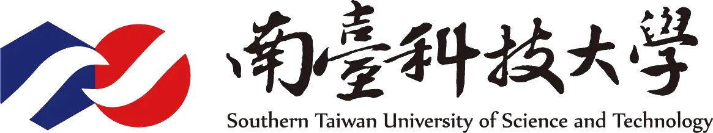
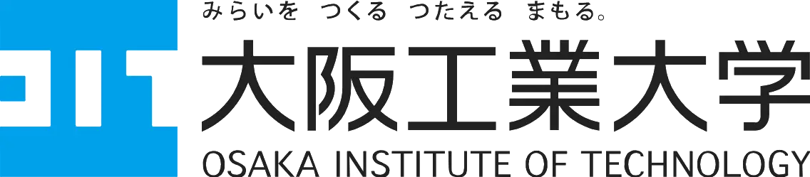
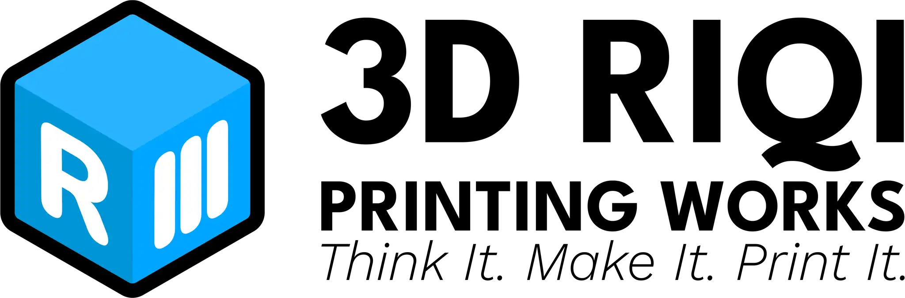

iPBL · 2026 · Cebu, Philippines
Delegates from the Philippines, Taiwan, and Japan converge in Cebu to build and program a spider-inspired, four-legged autonomous robot, fitted with a camera and an AI object-detection system, geared toward search-and-rescue scenarios.
See the Programme ↓iPBL brings undergraduate delegates together for a project that is partially prepared in advance and substantially extended on-site: each delegate arrives having already completed an individual pre-training build, then spends the on-ground programme extending it in ways the manual alone doesn't anticipate.
For 2026, the theme is the Autonomous Quadruped Challenge: delegates build and calibrate a spider-inspired, four-legged robot integrated with a camera and an AI object-detection system, with applications geared toward search-and-rescue scenarios. What happens once every delegation is in the same room, extending that build toward its full autonomous behaviour, is reserved for the programme itself.
iPBL runs in two phases: individual pre-training, completed at each delegate's home campus before travel, and an intensive in-person build once every delegation has arrived. What happens on-site builds directly on the pre-training; specifics of that phase are intentionally not published in advance.
Teams build and program a spider-inspired, four-legged autonomous robot integrated with a camera and an AI-based object detection system. Delegates assemble the hardware and program its behaviours, from locomotion control to vision-based target identification, with applications geared toward search-and-rescue scenarios.
iPBL 2026 draws delegates from three universities across the Philippines, Taiwan, and Japan.


iPBL 2026 is held on-site at the USJ-R Quadricentennial Campus, the university's newest campus building along Colon Street in downtown Cebu City.
The 2026 cohort's kits, PCBs, and shipping to partner delegates are made possible by the generous support of the following sponsors.

Every delegate arrives in Cebu having already built and calibrated their own quadruped. Start there.
Open the Pre-Training Manual →